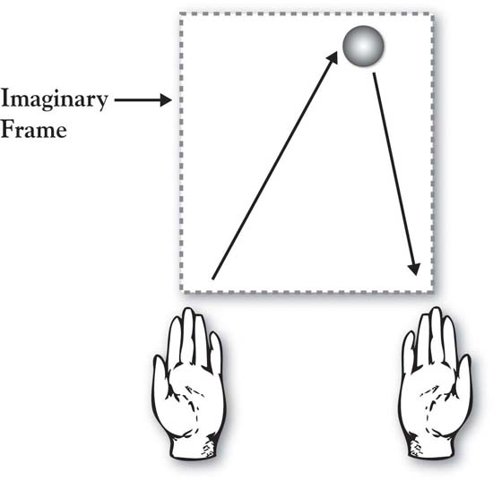

The world cannot be governed without juggling.
John Selden, The Table-Talk of John Selden, 1892
Jugglers captivate audiences. Even juggling just three balls is an elegant and artistic act that is seemingly out of the reach of 95% of the population, given requirements of technical skill, great coordination, and focus. This is why we watch the juggler with great envy and admiration.
Yet there is a way to simplify this complex and challenging act so that everyone can do it. (Honestly, everyone.) Michael Gelb’s brilliant discussion of juggling as a metaphor for human learning applies three key principles: (a) breaking the complex into simple pieces, (b) getting repetition on the pieces and then building them into an integrated whole, and (c) creating a language around which we can think, train, and discuss.Gelb (2003).
The natural inclination of the novice juggler is to focus on catching the balls. Toss one, then two, then three, and try to catch. Every dropped ball is a failure and a source of frustration. Balls fly all over the place because there is no discipline in the tossing. But it takes the novice a while to realize that because he is so focused on catching the balls, he fails to see the mechanics that underlie successful juggling. The error variance caused by the many, varied throws really takes the would-be juggler away from the goal of tossing and catching the balls in an easy, controlled pattern.
Gelb’s insightful method, though, brings order to this chaos by boiling the task down to its simplest components. Following it, a novice can be juggling three tennis balls comfortably in 10 to 20 minutes. We have provided an overview of the initial step in Figure 3.1 "Juggling Three Balls: The Initial Left-Hand Toss" to illustrate the basic principles applied.
Figure 3.1 Juggling Three Balls: The Initial Left-Hand Toss
You begin by writing numbers on the tennis balls with a magic marker—1, 2, and 3. Put a big dot or “X” on Ball 3 to distinguish it from the other two.
Left-Hand Throw (Ball 1)
Stand facing your couch so that when you are tossing balls the couch will catch any that do not land in your hands. Holding only Ball 1 in your left hand, envision a frame floating in front of you. The frame is about the width of your shoulders and would extend vertically to a little above your eye line. Toss Ball 1 from your left hand up to the center-right part of the top of your imaginary frame, keeping your eyes looking up (don’t look down at your hands). If you toss it accurately to the upper right of the frame, the ball will tend to drop straight down (see Figure 3.1 "Juggling Three Balls: The Initial Left-Hand Toss"). It is safe to say that your first few tosses will not be accurate. But it’s not important that you catch it. Just try to throw it easily, accurately, and in a controlled way. Focus on the toss with your left hand, not the catch with your right. Pick the ball up from the couch and keep tossing. Make your throws as consistent as you can. Odds are that by the 5th or 6th throw, even though you’re not trying to catch the ball in your right hand, you do (you just can’t help it!). Keep practicing your left-handed throw until the ball starts dropping consistently into your right hand, keeping your eyes forward.
This fundamental principle of the accurate “left-hand toss to upper right frame” is at the center of your ability to juggle. Once the novice has experience at this basic toss, Gelb teaches how to generalize it and follow with a “right-hand toss to upper left frame” (Ball 2) and then to add Ball 3 with appropriate timing. Once Ball 3 is added, the 3-ball integrated toss is defined around the concept of a juggulation, an aptly named cycle that consists of three tosses and three catches. The juggler proceeds to juggling excellence by first achieving a juggulation, then practicing one juggulation at a time, then going for two juggulations one after the other, and so on.
We leave you to Gelb’s books for completion of your juggling training. But there is a wonderful set of principles in this process that lay a foundation for our work on growth strategy:
The same principles are at work in our description of the 3-Circle model. What has been written on growth strategy, competitive strategy, positioning, customer analysis, competitive analysis, and company analysis can, and does, fill libraries. It is fair to describe it as chaotic, and attacking it all at once would be like trying to teach yourself to juggle by simultaneously throwing multiple balls in the air at once. Our process is designed to do exactly the same thing as Gelb’s: Break down the components, integrate them back together in a way that produces effective results, and, in doing so, create a language around which to build growth strategy. The goal is to make accessible concepts that have been thought to be messy, complex, and inaccessible.
The objective in this chapter is to teach how to frame up a 3-Circle project by defining its component parts. These are the three most significant component parts that every manager juggles in growth strategy planning and execution.